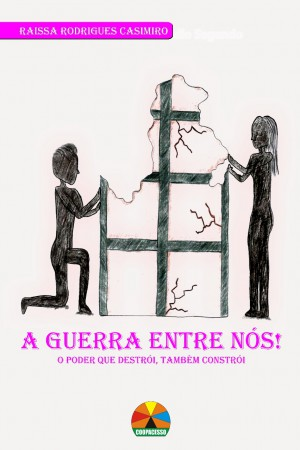
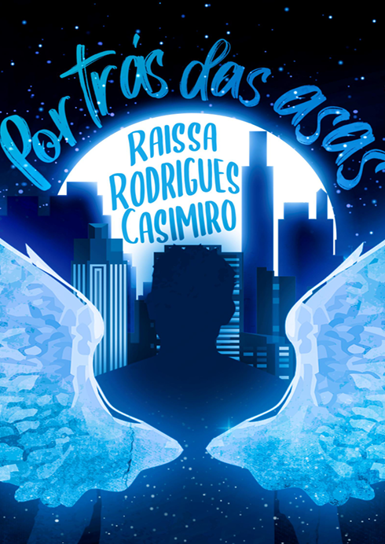
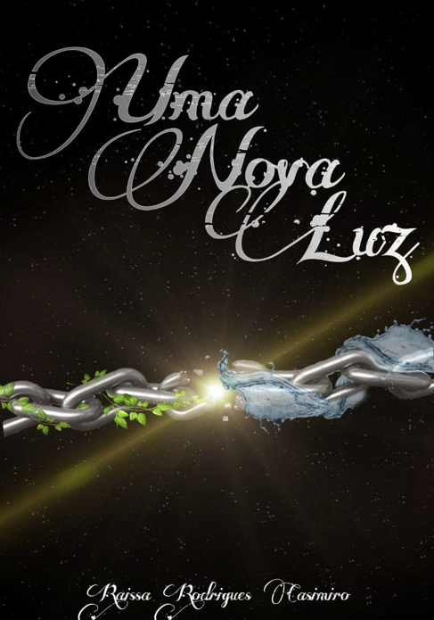
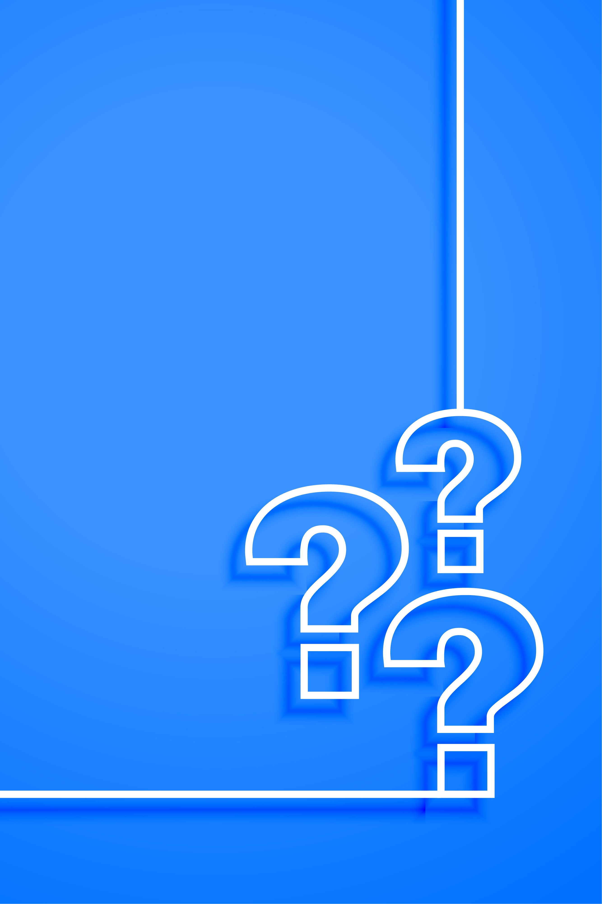

A Guerra Entre Nós
Por Trás das Asas
Uma Nova Luz
Duas Partes de Um Coração
A Entrevista da Minha Vida
Contos de Fadas
Mostrando desde pequena qual seria seu futuro quando
escrevia pequenas histórias em sulfites com seu priminho, Raissa começou oficialmente sua vida de escritora
aos 14, tendo seu primeiro livro "A Guerra Entre Nós" publicado na sua festa de 15 anos. Dois anos depois,
publicou "Por Trás das Asas", ambos livros de fantasia publicados pela editora local Copacesso.
Raissa sempre foi apaixonada pela arte em todas as suas formas, seja na música, no audiovisual, no teatro, ou,
principalmente, na escrita. Seus livros favoritos são de fantasia e distopia, daqueles que a fazem ficar
vidrada e esquecer do resto do mundo, mas mesmo assim deixam o coração quentinho (e, por mais que não
admita com frequência, ama os que a fazem chorar).
Ela mora na mesma cidade (e na mesma casa) desde que nasceu com seus pais, seu irmão e suas avós, é técnica de
informática (chocante, né?) e, no momento, está cursando Análise e Desenvolvimento de Sistemas (o que é irônico,
já que o protagonista de seu segundo livro trabalha com tecnologia também, e ela só percebeu isso na metade do
seu curso). Agora, ela consegue juntar "The Best Of Both Worlds" (pegaram a referência?), programando sobre
seus livros.
Whatsapp: (11)93423-5730
Instagram: @raii_rc23
Email: raissa.casimiro23@gmail.com